Robodex
Every robot the forge knows, first sorted by how we know it, then by how it moves. Source badges name the evidence behind an entry; gate badges still come only from recorded runs.
Researched robots use published specs, URDFs, datasheets, and project records.

Andino
Ground — wheeled · Differential roverFail
TurtleBot3 Burger
Ground — wheeled · Differential roverPass
TurtleBot3 Waffle Pi
Ground — wheeled · Differential roverNot gated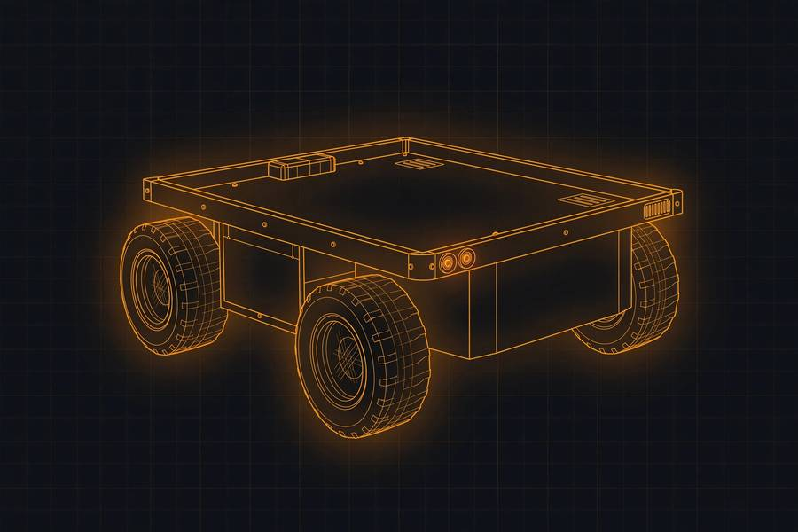
Pathfinder
Ground — wheeled · Skid-steer roverPass
PX4 X500
Aerial · QuadcopterNot gated
Crazyflie 2.1
Aerial · QuadcopterNot gated
Unitree Go2
Legged · QuadrupedNot gatedStatic check: STABLE — tip margin 32°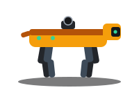
Mini Pupper
Legged · QuadrupedNot gatedStatic check: STABLE — tip margin 28°
Unitree G1
Legged · HumanoidNot gatedStatic check: UNSTABLE — tip margin 3°
ROBOTIS OP3
Legged · HumanoidNot gatedStatic check: UNSTABLE — tip margin 3°
OpenManipulator-X
Stationary · Robotic armNot gatedAsimov 1
Legged · HumanoidNot gatedStatic check: UNSTABLE — tip margin 3°No robots match this source and filter combination yet.
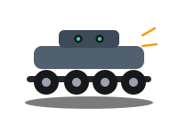
RobotForge illustrations — drawn for this index; photos and gate badges live on each robot's page.
Take it apart in 3D → orbit, explode and export the Burger kit as parametric CAD
Parts catalogue
178 real parts with datasheet-sourced specs, grouped by class. These are what the forge assembles robots from and checks parts lists against.
actuators (23)

2212 1000KV brushless outrunner
A classic mid-size drone and RC-plane outrunner, 1000 KV.

2306 1750KV brushless motor
The 5-inch freestyle standard: 23 mm stator, 1750 KV for 6S manners.

25GA-370 DC gearmotor 12 V
A 25 mm metal-gearbox DC motor, the workhorse size between toy motors and industrial ones.

28BYJ-48 stepper motor with ULN2003 driver board
A small 5 V geared stepper sold with its ULN2003 driver board; slow, cheap, everywhere.

775-size DC motor (12-24 V)
A fist-sized brushed motor with real shaft power for tools and drivetrains.
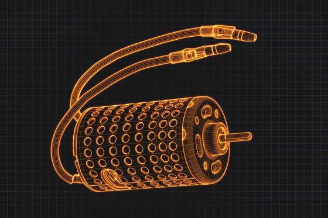
Brushed motor 540 size
The standard 540-size brushed motor from RC cars.
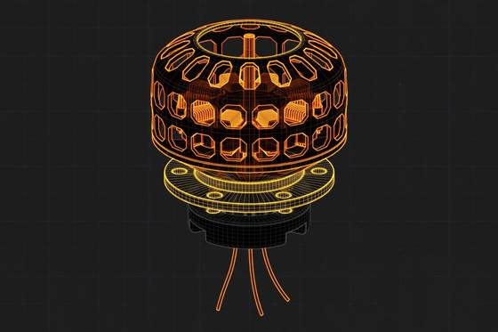
Brushless motor 2207 1960 KV
An FPV quad motor: small, light, spins very fast.
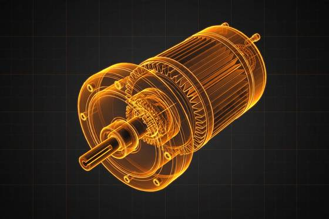
DC gearmotor 12 V (37 mm class)
A DC motor with a built-in gearbox: slow, strong turning for wheels.

DS3218 high-torque servo (20 kg class)
A standard-size digital servo with metal gears and serious holding torque.

Hitec HS-645MG servo
A long-running standard-size servo with metal gears, popular in RC and robotics.

Linear actuator 12 V, 100 mm stroke
A motor-driven pushrod: apply 12 V, it extends; reverse polarity, it retracts.

MG90S micro servo (metal gear)
The SG90's tougher sibling: same size, metal gears, a bit more torque.
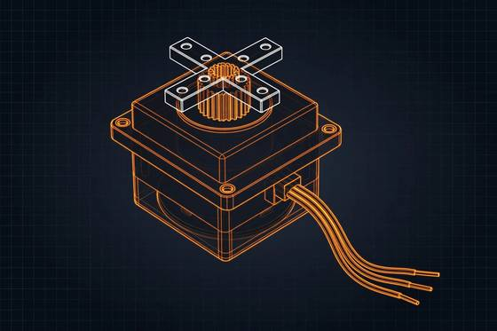
MG996R servo
A metal-gear hobby servo that turns to a commanded angle.

NEMA 23 stepper motor
The bigger standard stepper frame: 57 mm face, 200 full steps per revolution.

Push-pull solenoid 12 V
A coil and a spring-loaded plunger: power it and the plunger pulls in with a clack.

SG90 micro servo
A tiny 9 g positional servo, the classic first servo for small mechanisms.
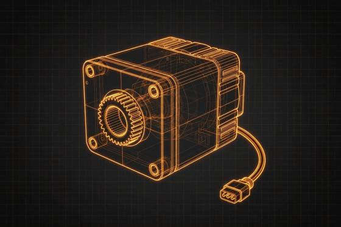
STS3215 serial bus servo (Feetech)
A serial-bus servo: many chain on one wire and report their position back.
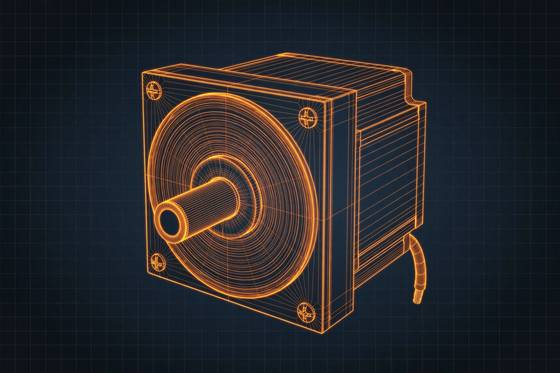
Stepper motor NEMA 17
A stepper motor that moves in precise 1.8-degree steps.

TT DC gearmotor (1:48, dual shaft)
The yellow plastic-gearbox motor from classroom robot kits, with a shaft on both sides.

VEX IQ Pneumatics Kit
Air-powered pistons for IQ: a pump fills the tank and a solenoid fires the cylinders. Fast, strong, two-position moves.

VEX IQ Smart Motor
VEX IQ's motor: a small motor, gearbox, encoder and controller in one plastic case. 120 rpm with no load.

VEX V5 Smart Motor (11 W)
VEX's main motor: a motor, gearbox cartridge, encoder and controller in one box. Swap the cartridge to trade speed for torque.

VEX V5 Smart Motor (5.5 W)
A smaller, half-power V5 motor with a fixed 200 rpm output.
cables & connectors (10)

Dupont jumper wire kit
Rainbow ribbons of male-male, male-female and female-female jumpers.

Heat-shrink tubing kit (assorted)
A box of shrinking sleeves in every diameter a robot harness wants.

JST PH 2.0 mm connector set
Crimp housings and pins for the 2.0 mm pitch connector on half the sensor boards ever made.

QWIIC / STEMMA QT cable set
Little 4-pin I2C cables in several lengths: sensor to board with no soldering.
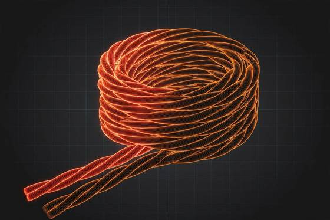
Silicone wire 14 AWG (per metre)
Flexible silicone-insulated wire thick enough for battery current.

USB-C to USB-C cable (100 W PD)
A USB-C cable rated for 100 W power delivery, for hungry single-board computers.

WAGO 221 lever-nut connectors (assortment)
Lever-operated splicing connectors: flip, insert, clamp. Reusable and honest.

XT30 pigtail (18 AWG)
The little XT: a compact 2-pin power connector on a silicone lead.
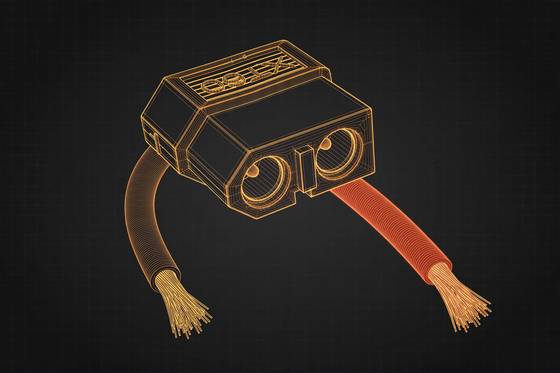
XT60 pigtail lead
A short lead with the yellow XT60 battery connector already soldered on.

XT90 pigtail (12 AWG)
The big sibling of XT60 on a short silicone lead, for high-current packs.
cameras & sensors (26)

BME280 environmental sensor
Temperature, humidity and air pressure from one tiny I2C chip.
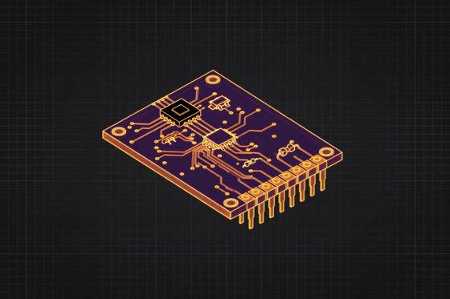
BNO055 9-DOF IMU breakout
A 9-axis motion sensor with on-chip orientation fusion (compass + gyro + accelerometer).

Benewake TF-Luna LiDAR
A single-point LiDAR the size of a grape: 0.2 to 8 m over UART or I2C.

DHT22 / AM2302 temperature-humidity sensor
The white-grid humidity and temperature sensor with the slow, patient protocol.
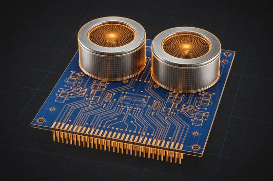
HC-SR04 ultrasonic ranger
The two-eyed sonar module: pings and times the echo to measure distance.

HC-SR501 PIR motion sensor
The white-domed motion detector from a thousand alarm projects.

HX711 load cell kit (5 kg cell + amplifier)
A beam load cell and its 24-bit amplifier chip: weigh things with a microcontroller.

Hall-effect motor encoder (pair)
Two hall sensors and a magnetic disc that clip onto a gearmotor's rear shaft.

INA219 current and voltage sensor board
An I2C power monitor: bus voltage, current and power, read digitally.
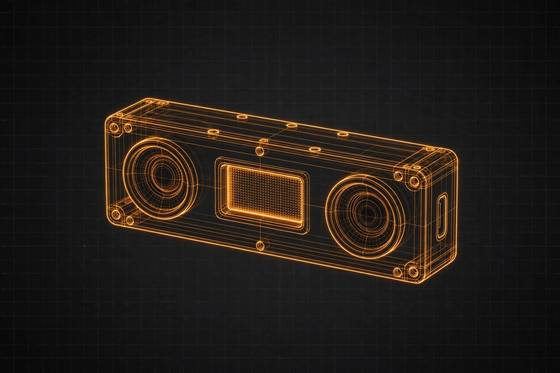
Intel RealSense D435 depth camera
A stereo depth camera: sees colour plus distance per pixel.

Intel RealSense Depth Camera D455
The long-range RealSense: depth from about 0.6 m to 6 m, with an IMU inside.

MPU-6050 6-axis IMU module (GY-521)
The everywhere IMU module: 3-axis gyro plus 3-axis accelerometer on I2C.

OV5647 5 MP camera module (Pi camera v1 class)
The original Pi camera sensor on a module: 5 MP, fixed focus, everywhere.

QMC5883L 3-axis magnetometer
A digital compass chip on a module: heading from the Earth's field, over I2C.
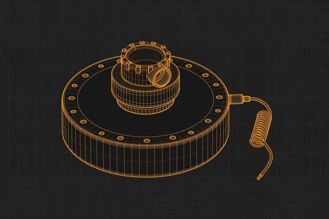
RPLIDAR A1 2D lidar
A spinning 2D laser scanner — it sweeps a room and reports distances all around.

Raspberry Pi Camera Module 3
The current Pi camera: 12 MP with powered autofocus, in standard and wide versions.
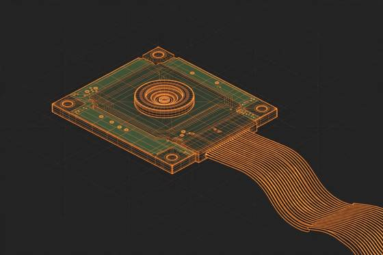
Raspberry Pi Camera Module V2 (8 MP)
The little ribbon-cable camera made for the Raspberry Pi.

Sharp GP2Y0A21YK0F IR distance sensor
The classic analogue IR ranger: voltage out falls as the obstacle nears, 10 to 80 cm.

VEX IQ Distance Sensor (2nd gen)
Measures how far away an object is with a laser time-of-flight beam.

VEX IQ Optical Sensor
Reads colour, brightness and how close an object is, close up.

VEX V5 Distance Sensor
A laser time-of-flight sensor that measures how far away an object is.

VEX V5 Inertial Sensor
Measures which way the robot is facing and how it is moving.

VEX V5 Optical Sensor
Sees colour, brightness and how close an object is.

VEX V5 Rotation Sensor
Measures how far a shaft has turned, even across power cycles.

VL53L0X time-of-flight distance sensor
A laser ranging chip on a breakout: distance in millimetres over I2C, up to about 2 m.

u-blox NEO-M9N GPS module
A modern multi-constellation GPS receiver on a breakout, with a real fix indicator.
comms (10)

CP2102 USB-to-UART adapter
The little USB stick that gives any UART a serial console.
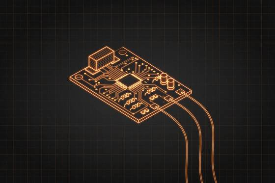
ExpressLRS receiver
A tiny ExpressLRS radio-control receiver.

HM-10 BLE Bluetooth module
A UART-to-Bluetooth-LE bridge: serial in, phone app out.

LoRa radio module 915 MHz (RFM95W)
A long-range, low-rate radio: kilometres of telemetry at a whisper of power.

SN65HVD230 CAN bus transceiver board
A 3.3 V CAN transceiver on a board: how ESP32s and Teensys join a vehicle bus.
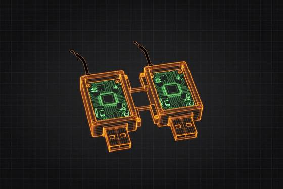
SiK telemetry radio pair (915 MHz)
A pair of long-range radio modems that make a wireless serial link.

VEX IQ Controller (2nd gen)
The handheld controller for driving an IQ robot. The 2nd generation pairs from the Brain's menu with no cable.

VEX V5 Controller
The handheld controller the driver uses: two joysticks, buttons, and a small screen.

VEX V5 Robot Radio
The radio that links the Brain to the controller.

nRF24L01+ 2.4 GHz radio module
A tiny SPI radio that links Arduinos across a room for pocket money.
custom boards (2)
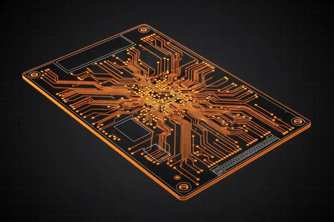
Custom PCB (KiCad import)
Your own circuit board, designed in KiCad and fabricated to order.

Perfboard / protoboard set
Copper-dot boards in useful sizes: where a circuit goes when it graduates from the breadboard.
drivers (11)

35 A BLHeli_32 ESC
A single brushless ESC running BLHeli_32: configurable, DShot-capable, no BEC on most.
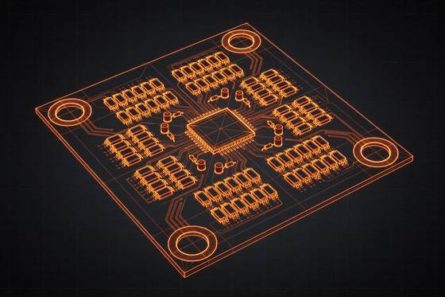
4-in-1 ESC 45 A (BLHeli_S class)
Four brushless speed controllers on one board for a quadcopter.

A4988 stepper driver (Pololu-style carrier)
The little red stepper driver carrier: step/dir in, one bipolar stepper out, up to 1/16 microstepping.

BTS7960 43 A H-bridge module
A chunky single-motor H-bridge module built around the BTS7960 half-bridges.
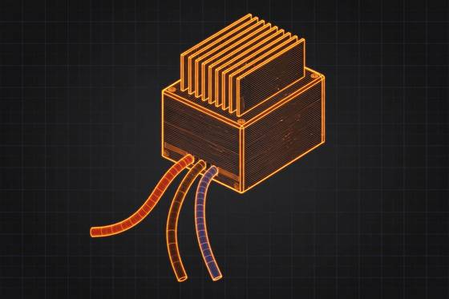
Brushed ESC 60 A (QuicRun 1060 class)
A single brushed speed controller for an RC car's main motor.

DRV8825 stepper driver (Pololu-style carrier)
A4988's bigger sibling: higher voltage, 1/32 microstepping, more current per coil.
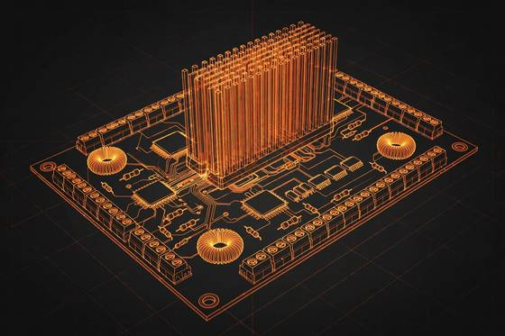
L298N dual motor driver module
The classic red dual H-bridge module for two DC motors or one stepper.

L9110S dual H-bridge module
A tiny two-motor driver for small voltages and small motors.

PCA9685 16-channel PWM driver board
An I2C board that runs 16 servos or LEDs with its own clock, so the microcontroller does not have to.
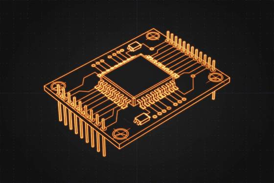
TB6612FNG dual motor driver
A small dual motor driver: runs two DC motors forward, reverse and brake from logic signals.

TMC2209 silent stepper driver
A stepper driver famous for quiet motion: stealthChop, sensorless homing, UART setup.
end effectors (3)
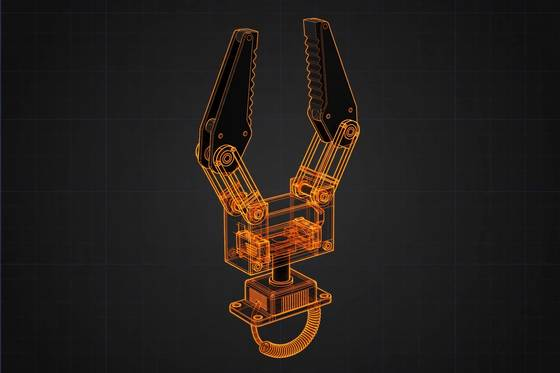
2-finger parallel gripper kit
A two-finger parallel gripper kit (servo not included).

Electromagnet 12 V (holding)
A puck that becomes a magnet when powered: pick up steel parts, drop them on command.

Parallel gripper kit (servo-driven)
Two fingers on parallel links that stay parallel: the honest way to hold a cube.
flight control (2)
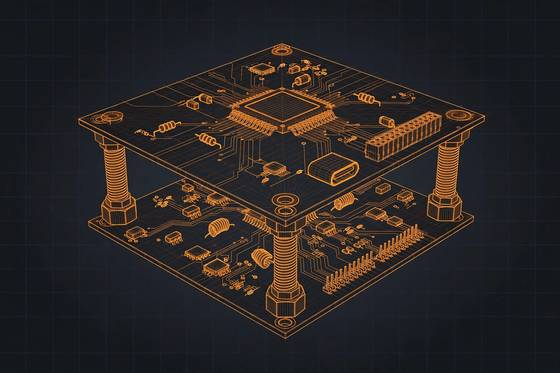
Flight controller stack F405
Flight-controller board stack that stabilises a quadcopter.

Holybro Pixhawk 6C flight controller
The current reference Pixhawk: triple-redundant IMUs, the full PX4/ArduPilot stack.
materials (7)

ABS filament 1.75 mm, 1 kg
The older workhorse plastic: tougher than PLA, warps without an enclosure.

Baltic birch plywood sheet 3 mm
Void-free plywood that laser-cuts into beautiful chassis plates.

HIPS filament 1.75 mm, 1 kg
ABS-like filament best known as a dissolvable support material.
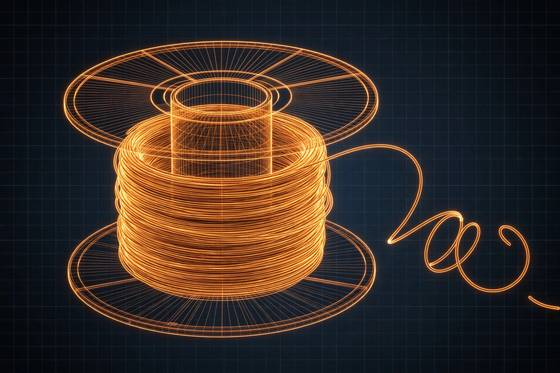
PETG filament 1.75 mm, 1 kg
A tougher, slightly flexible printing filament.
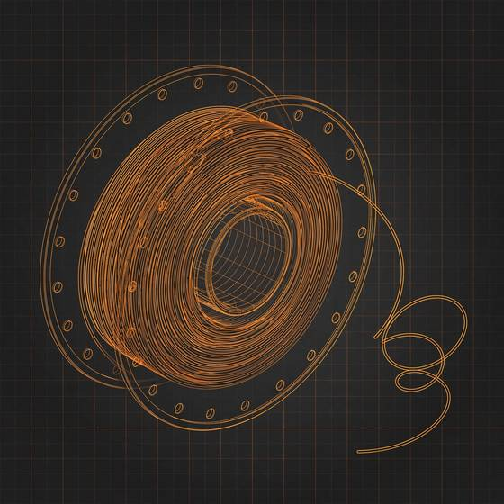
PLA filament 1.75 mm, 1 kg
The standard easy-print 3D printing plastic, on a 1 kg spool.

Polycarbonate filament 1.75 mm, 1 kg
The strong, heat-tough printing plastic: prints hot and warps if rushed.

Standard photopolymer resin, 1 kg (405 nm)
Bottle of UV-curing resin for detail parts on an MSLA printer.
memory & storage (3)

M.2 2280 NVMe SSD 1 TB
A terabyte of fast storage for the SBCs that can boot from it.
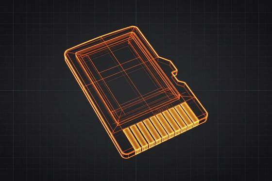
microSD card 128 GB (A2/V30)
The removable flash card a Raspberry Pi boots from.

microSD card 256 GB (V30)
A quarter-terabyte on a fingernail, fast enough for 4K logging.
microcontrollers (12)

Arduino Nano (classic)
Uno guts on a breadboard-friendly stick.

Arduino Uno R3
The reference Arduino board: 5 V logic, a forest of shields, decades of examples.
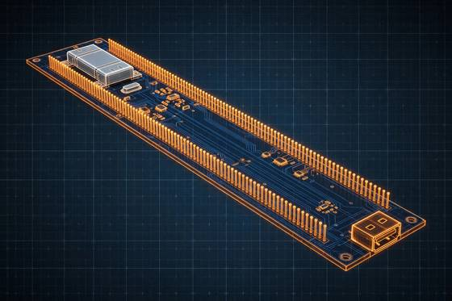
ESP32 development board
A Wi-Fi/Bluetooth microcontroller board — the robot's reflexes.

ESP32-S3 development board
The ESP32's newer sibling: dual-core, native USB, vector instructions for small ML.

NodeMCU ESP8266 development board
The board that put WiFi on everything: one core, 3.3 V, huge community.
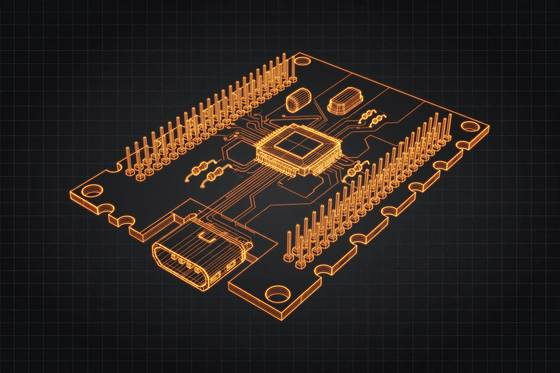
Raspberry Pi Pico (RP2040)
Raspberry Pi's cheap dual-core microcontroller board.

Raspberry Pi Pico W
The Pico with WiFi and Bluetooth: RP2040 dual-core plus a radio.

STM32 Blue Pill board (STM32F103C8T6)
A 72 MHz ARM Cortex-M3 board for a few dollars, programmed over SWD or USB.

Seeed Studio XIAO RP2040
An RP2040 the size of a postage stamp, USB-C, for embedding in finished things.
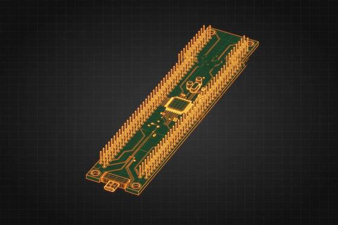
Teensy 4.1
A very fast microcontroller board popular for precise motion control.

VEX IQ Robot Brain (2nd gen)
The VEX IQ robot's computer: it runs your program and talks to motors and sensors through 12 Smart Ports. The 2nd generation Brain has an inertial sensor built in.

VEX V5 Robot Brain
The V5 robot's computer: it runs your program and talks to every motor and sensor through its Smart Ports.
power (17)
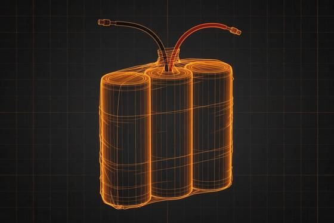
18650 Li-ion pack 3S (3 cells)
Three cylindrical 18650 cells in series — 11.1 V of robot power.

21700 Li-ion cell 3.7 V (5000 mAh class)
The bigger cylindrical cell: 21 by 70 mm, about 5000 mAh in current production cells.

7805 voltage regulator (TO-220)
The three-legged classic: a steady 5 V out, heat as the price of simplicity.
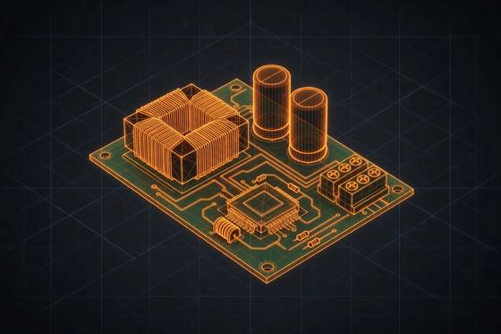
Buck converter 5 V / 5 A
Steps a higher battery voltage down to a clean 5 V.

LM2596 adjustable buck converter module
The blue adjustable step-down module with the trim pot: set the voltage, feed a robot from a bigger pack.
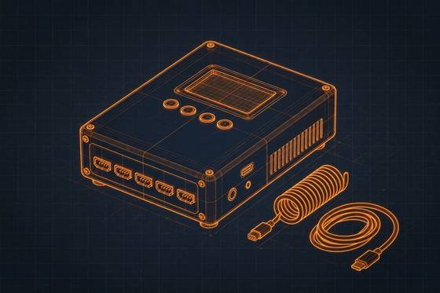
LiPo balance charger
Charger that keeps every cell in a LiPo pack at the same voltage.

LiPo battery 2S 5000 mAh
A 2-cell lithium-polymer pack, 7.4 V, the RC car standard.
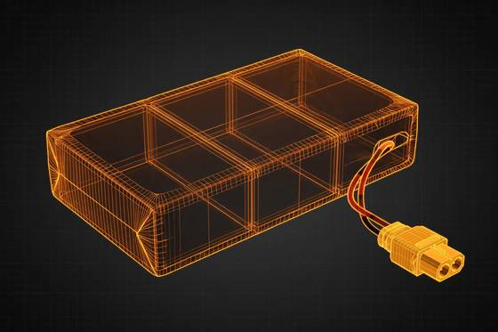
LiPo battery 3S 2200 mAh
A 3-cell LiPo pack, 11.1 V — the classic small-robot battery.
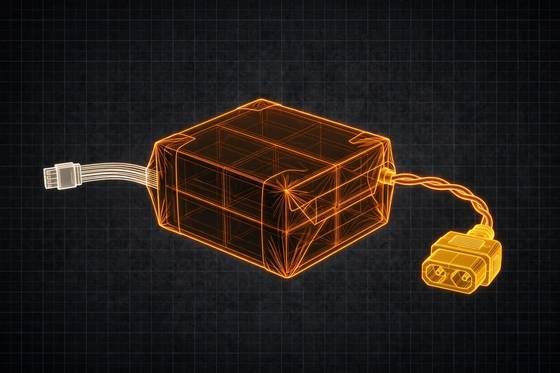
LiPo battery 4S 1500 mAh (5-inch quad)
A smaller 4-cell LiPo pack sized for a 5-inch quadcopter.
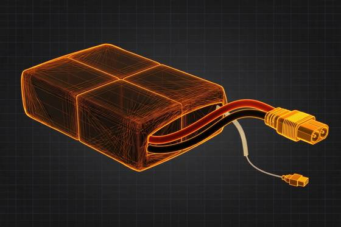
LiPo battery 4S 5200 mAh
A rechargeable lithium-polymer battery pack: 4 cells in series, 14.8 V, lots of capacity.

LiPo battery 6S 1300 mAh
A 6-cell pack for 5-inch and larger quads that want punch over endurance.

MT3608 boost converter module
A tiny step-up module: turn one cell's sagging voltage into a steady higher rail.

NiMH battery pack 7.2 V, 3000 mAh
A forgiving 6-cell nickel-metal-hydride pack, the old RC standard.

Power distribution board with XT60 input
A quadcopter power hub: battery in on XT60, solder pads out to ESCs and regulators.

VEX IQ Robot Battery (Li-ion, 2000 mAh)
The IQ robot's rechargeable battery: 7.2 V, 2000 mAh (the 2nd generation is Li-ion, the 1st was NiMH).

VEX V5 Robot Battery (Li-ion, 1100 mAh)
The V5 battery pack. It plugs into the Brain, and the Brain powers every motor.

iMAX B6 balance charger
The long-running blue balance charger for LiPo/Li-ion/NiMH packs, 80 W class.
air propulsion (2)
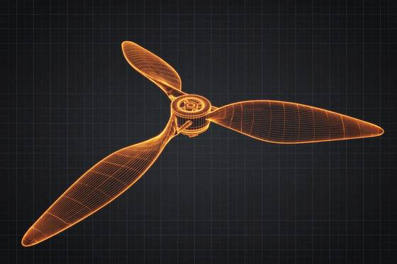
Propeller 5x4.0x3 tri-blade
A 5-inch tri-blade propeller for FPV quads.

Propeller 6x4 (pair)
A 6-inch, 4-inch-pitch two-blade prop pair (CW + CCW).
safety & protection (6)
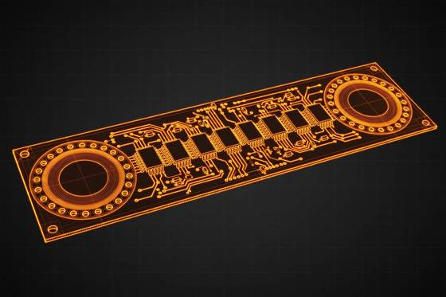
BMS protection board 4S 40 A
A battery-management board that protects a 4-cell pack from over/under-voltage.
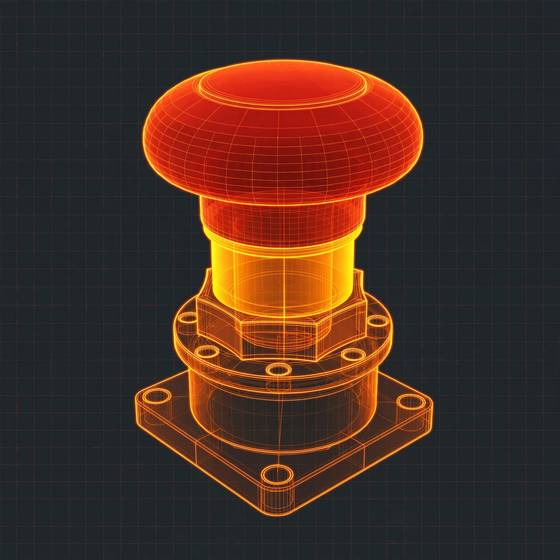
Emergency stop button (latching)
A big latching red button that cuts power when slapped.
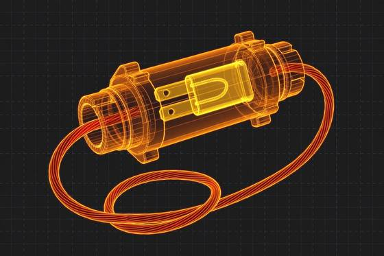
Inline blade fuse holder + fuse
A fuse holder wired into the battery's main lead.

LiPo low-voltage alarm (1-8S)
A beeper that rides the balance lead and screams before a cell sags too far.

Manual-reset circuit breaker 30 A
A resettable breaker for the main battery line: pops on fault, presses back to life.

XT90-S anti-spark connector (pair)
An XT90 with a resistor pre-charge path: no snap, no pitted contacts on big packs.
single-board computers (5)

NVIDIA Jetson Nano developer kit
The original little Jetson: a 128-core Maxwell GPU for CUDA and vision learning.
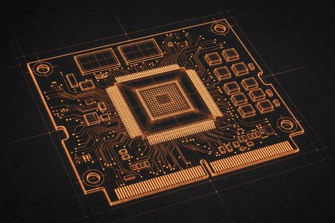
NVIDIA Jetson Orin Nano
A GPU computer module for robots that see: camera AI on a board the size of a laptop memory stick.

Raspberry Pi 4 Model B
The previous-generation Pi: quad-core, dual camera/display options, runs the same software as the 5.
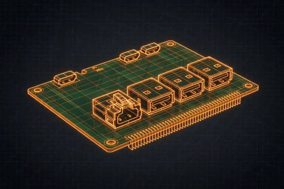
Raspberry Pi 5
A full Linux computer the size of a credit card.

Raspberry Pi Zero 2 W
A quad-core Pi in the tiny Zero footprint, with WiFi.
structure (24)

2020 corner bracket set
Cast aluminium right-angle brackets that square up 2020 extrusion frames.

608-2RS ball bearing
The skateboard bearing: 8 mm bore, 22 mm outside, 7 mm wide, sealed both sides.
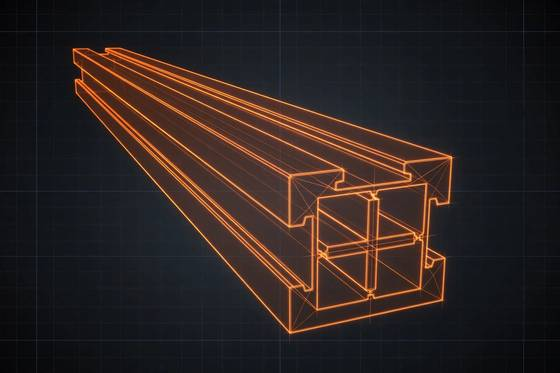
Aluminium extrusion 2020 (per metre)
Slotted aluminium profile, 20 by 20 mm, sold by the metre.

Aluminium extrusion 2040 (per metre)
The flat 20-by-40 profile: a beam and a rail in one.

Aluminium extrusion 3030 (per metre)
Slotted aluminium profile, 30 by 30 mm, sold by the metre.
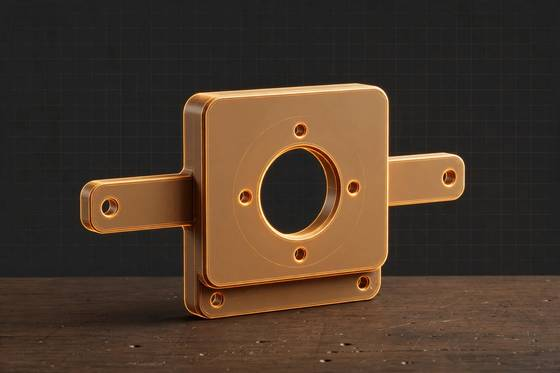
Camera bracket (3D-printed)
A small flat bracket that holds a camera facing forward.

Carbon fibre tube 10 mm OD (per metre)
A stiff, light 10 mm tube for booms, legs and handles.
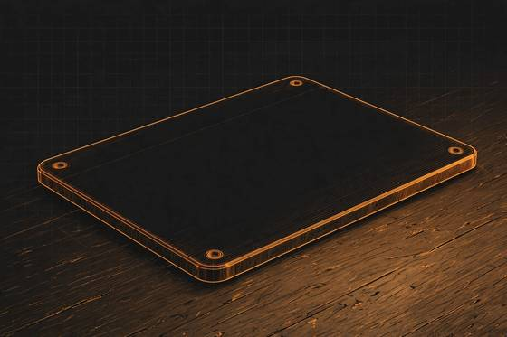
Chassis plate (3D-printed)
The flat deck everything bolts onto — in RobotForge it is generated for your robot, ready to print.

Flexible shaft coupler 5 x 8 mm
A spring-cut aluminium coupler joining a 5 mm motor shaft to an 8 mm screw or shaft.

GT2 pulley 20T, 5 mm bore
A 20-tooth GT2 pulley with a 5 mm bore for NEMA 17 shafts.

GT2 timing belt 6 mm (open, per metre)
Open-ended 2 mm-pitch toothed belt, 6 mm wide, sold by the metre.
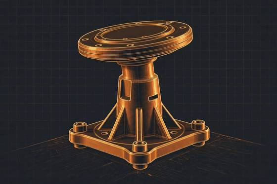
Lidar mount post (3D-printed)
A post that raises the 2D lidar above the deck for a clear 360-degree view.

M3 brass standoff kit (assorted)
Hex brass spacers in a ladder of lengths: how boards hover over plates.

M3 heat-set thread inserts
Brass inserts that melt into printed holes and leave a real machine thread behind.

M3 socket-head screw kit (assorted lengths)
The box every robot builder ends up owning: M3 bolts from 6 to 30 mm, nuts and washers.

MGN12 linear rail with carriage
A 12 mm miniature linear guideway and its ball carriage block.
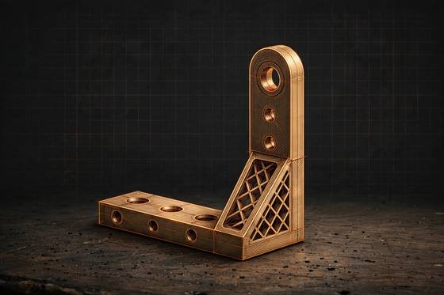
Motor mount bracket (3D-printed)
A small bracket that holds a gearmotor at exactly axle height.
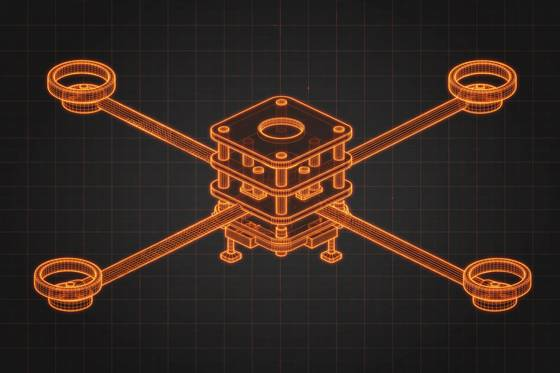
Quadcopter frame 5 inch (carbon)
A carbon-fibre frame sized for 5-inch propellers.

T8 lead screw with brass nut (8 mm)
An 8 mm trapezoidal screw and its anti-backlash brass nut, in axis lengths.
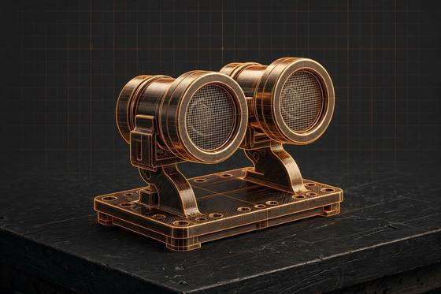
Ultrasonic bracket (3D-printed)
A twin-can bracket sized for an HC-SR04-style ultrasonic ranger.

VEX IQ beams and plates
IQ's plastic building pieces: beams and plates on a 0.5 in hole grid, joined with snap-in pins. No tools needed.

VEX IQ gears (12, 36, 60 teeth)
Plastic spur gears for IQ. Small driving big gives torque; big driving small gives speed.

VEX aluminum C-channel (1x2x1)
The standard VEX frame rail: a U-shaped metal beam with square holes every half inch.

VEX high-strength gears (12-84 teeth)
Spur gears that change speed and torque between a motor and a wheel.
wheels (15)
Ball caster
A free-rolling ball that supports the end of a two-wheel robot without steering it.
Mecanum wheel 100 mm
A wheel with angled rollers that lets a robot slide sideways.

Mecanum wheel 48 mm
A small mecanum wheel: rollers at 45 degrees let a chassis strafe.

Omni wheel 60 mm
A wheel with free rollers around its rim: drives forward, slides sideways.

Pneumatic wheel 130 mm
An air-filled wheel that floats over gravel and grass instead of rattling across them.

Rubber tank track set (pair)
Linked rubber tracks with drive sprockets and idlers for a tracked chassis.

Rubber wheel 65 mm (TT-motor fit)
The wheel that ships with every TT-motor kit: 65 mm of grippy rubber.

VEX 2.75 in omni-directional wheel
The smallest VEX omni wheel, low and light.

VEX 3.25 in omni-directional wheel
A smaller omni wheel, a common choice for fast competition drive trains.

VEX 3.25 in traction wheel
A wheel with a grippy tread and no rollers, so it resists being pushed sideways.

VEX 4 in mecanum wheel
A wheel with angled rollers. Four of them, each with its own motor, let the robot drive in any direction.

VEX 4 in omni-directional wheel
A wheel with small rollers around its edge. It grips forward and back, and slides sideways.

VEX IQ 200 mm travel omni wheel
An IQ wheel with rollers round its edge: it grips forward and back and slides sideways, so the robot turns smoothly.

VEX IQ 200 mm travel wheel
IQ's standard wheel: one turn rolls it 200 mm forward (about 64 mm across).
Wheel 100 mm diameter
A 100 mm robot wheel — the size on the Pathfinder spec.
No parts match that search.